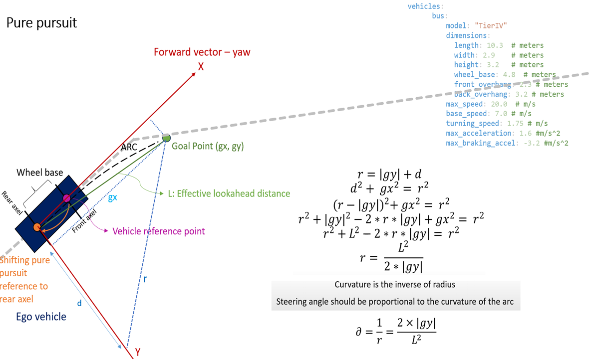

Control Module
The Control Module in simple-AV is responsible for executing the planned trajectory by sending commands to the vehicle's actuators, such as steering, acceleration, and gear. It ensures that the vehicle follows the desired trajectory while maintaining safety and stability. The control process involves controlling the vehicle's longitudinal speed, steering angle, and gear.
Key Algorithms and Components
-
PID Controller for Longitudinal Speed Control:
- The PID (Proportional-Integral-Derivative) controller adjusts the vehicle's acceleration to maintain the target speed.
- The controller calculates the error between the observed speed and the target speed, and computes the required acceleration to minimize this error.
-
Pure Pursuit Algorithm for Steering Control:
- The Pure Pursuit algorithm is used to calculate the required steering angle to follow the path accurately.
- It computes the curvature that will move the vehicle from its current position to a goal position, known as the look-ahead point.

- Gear Control:
- The module controls the vehicle's gear, switching between 'Drive' and 'Park' based on the current status of the vehicle.
Inputs to the Control Module
The Control Module receives data from various sources to perform its tasks:
- Look-Ahead Point: Provided by the Planning Module via the
simple_av/planning/lookahead_pointtopic. - Current Vehicle State: Includes the vehicle's current speed, orientation, and position from topics such as
/sensing/gnss/pose,/awsim/ground_truth/vehicle/pose, and/vehicle/status/velocity_status. - Status and Speed Limit: Instructions from the Planning Module indicating the current maneuver (e.g., cruise, decelerate, turn).
Outputs from the Control Module
The Control Module publishes commands to the vehicle's actuators to control its motion. These commands include:
- Steering Command: The angle at which the vehicle should steer to follow the path.
- Acceleration Command: The acceleration needed to reach and maintain the target speed.
- Gear Command: The gear state of the vehicle, such as 'Drive' or 'Park'.
Topics
- Input Topic:
simple_av/planning/lookahead_point -
Message Format:
geometry_msgs.msg/Point look_ahead_pointgeometry_msgs.msg/Point stop_pointstring statusfloat speed_limit
-
Output Topics:
AckermannControlCommandon/control/command/control_cmd- Message Format:
AckermannLateralCommand lateralLongitudinalCommand longitudinal
GearCommandon/control/command/gear_cmd- Message Format:
GearCommand
Control Strategy
The Control Module follows a feedback control strategy, constantly adjusting its commands based on real-time data from the vehicle and the Planning Module. This ensures the vehicle adheres to the planned path while dynamically responding to changes in the environment and the vehicle's state.
PID Controller
The PID controller in the Control Module is used to maintain the target speed by controlling the vehicle's acceleration. It adjusts the acceleration based on the error between the observed and target speeds, using proportional, integral, and derivative gains.
Pure Pursuit Algorithm
The Pure Pursuit algorithm computes the steering angle required to follow the path. It calculates the curvature to move the vehicle from its current position to the look-ahead point.
Summary
The Control Module is vital for translating the planned trajectories into actual vehicle movements. By leveraging the PID controller for speed control and the Pure Pursuit algorithm for steering control, along with managing the gear state, it ensures precise and safe navigation of the autonomous vehicle.